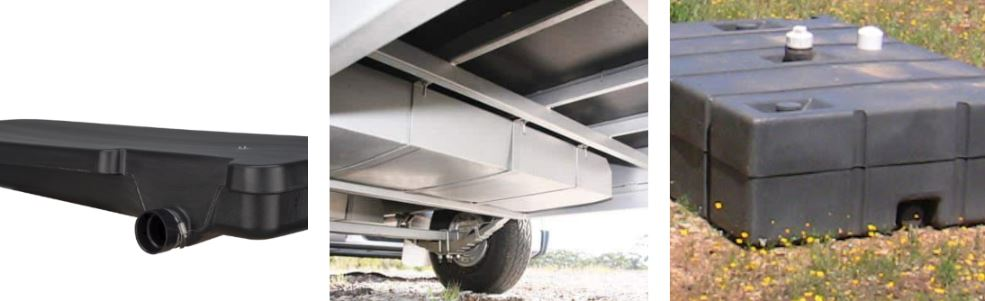

A Beginner's Guide To RV Waste Disposal
While you're having a fun with your friends or family members on your rv trips, there will certainly come a time when you need to clear out your Motor Home's waste rv waste tanks.
If you've been camping prior to or this is your very first time, you may be questioning: just how and also where do I unload my rv waste?
What type of waste tanks are there?
There are different types of rv waste tanks that are in an rv. Some are used for different types of waste that an rv produces. Here are the different types of waste tanks located in an rv.
Rv Gray Water Tank
Gray water is the wastewater that originates from the kitchen area and also bathroom sinks. This sort of water holds the residues of various types of washing such as washing clothes or washing dishes. Gray water tanks minimize the rate at which your black water tank fills. Gray water storage tanks are not always included in RVs, yet are a wonderful enhancement to have.
A gray water tank is needed in trailers or food trucks that offer food to the public. For each freshwater tank there is, there should be a gray water tank.
Rv Black Water Tank
Your Recreational Vehicle's black water tank is a really essential tank to have; it is the storage tank under your rv that is responsible for holding the waste from your bathroom. Think of the black water tank as the tank that is responsible for the bad waste.
If you wish to maintain your Recreational Vehicle's black water tank functioning in tip top shape, there are a couple of points you definitely need to consider while using one or cleaning one.
How Often Should You Empty Your RV Tanks
Exactly how often you are required to empty your rv tanks is often a rule of thumb. You might need to empty your tanks every couple days if you are taking a trip with a number of people. A couple of days meaning every other day. If it is only you and your partner, once per week might be just enough.
Some rvs featured systems to show you precisely just how full your rv water tanks are. This is a fantastic method to assess when to discard your waste, yet be advised! After a couple of years, these sensing units might not function at their best. Also brand-new ones might provide an inaccurate analysis due to toilet paper or various other types of waste sticking to the sensing unit making it read out "FULL" when it is not. A basic general rule is to wait up until your containers have to do with two-thirds complete prior to clearing them. It develops a far better "circulation" when discarding, making the procedure a lot more reliable.
Do truck stops have dump stations for RVs?
Yes, some truck stops have dump stations for rvs. However, these truck stops usually offer the dump station free to overnighters but rvs passing through will have to pay a fee.
What is an rv dump station?
An RV dump station is a center where wastewater from an rv can be easily cleared right into a sewage system or septic tank. Self-supporting Rvs that comes equipped with black and/or gray water holding tanks can be safely dumped at a dump station by linking a sewage system tube from the rig to the dump station input.
Dump stations situated in public camping areas as well as Recreational Vehicle parks are generally free for campers that stay overnight but might have a small cost for visitors. Lots of truck stops as well as gas stations additionally have dump stations making them a terrific "rest stop" to re-fuel as well as empty your storage tanks.
How to properly use an rv dump station
It is always best to know what you have to do and how to do it before you actually do it. Here i will go over the procedure you need to take when you get to an rv dump station. Hey, nobody wants to do anything wrong especially at one of these locations.
- Align Your Rv Perfectly
- Be safe
- Connect The Pump Next
- Release the Valve
- Rinse you tank
- Close the valve
Before you can do anything else at a dump station you will need to align your rv perfectly in the station.
Whenever we do anything in life we have to consider safety. In this matter you will be handling human waste and will need to be able to protect your skin and face. It's always best to wear protective gloves and eyewear. You might see some campers at the dump station emptying their load with no protective gear on. Do not copy this. You do not know when something might go wrong and it is always be best toi be prepared.
The next thing to do is to safely connect your rig to the dump station.
Ensure that all hoses are secure. Do one more check and then you can open the valve to release the waste.
While you are dumping your waste, prepare to rinse. You can use just a simple garden hose. Some rvs are equipped with self-rinsing mechanisms for ease of use.
When you are done, hook up the garden hose to your rv and the dump station. Allow the water to run through the storage tank a couple of times to make certain that solids that might be embedded at the bottom of the storage tank can be loosened up and also washed away with the water. Automatic washing systems will certainly enable the water to clean your tanks without much work from you.
After all has been done, you can close the valve. Disconnect from the dump station and enjoy empty waste water tanks.
8 Best Places To Dump Your Rv's Black Water
Here are some places you can go to dump your rv waste water.
- A Septic Tank
- Recycling centres
- Rv Dealerships
- Wastewater Treatment Plants
- Sporting Goods Store
- Gas stations
- RV parks and campgrounds
- Marinas
You can use a septic tank at your home to dump your waste. A macerator pump will make everything way easier.
Perfect for what we all do in toilets.
You can get some rv dealerships to rent you one of their rigs. Some of these dealerships offer an area for you do dump your waste.
These types of facilities offer the disposal of waste water. Make use of one by calling ahead instead of pulling up with a load only to find out they are not taking anymore rigs for the day.
Some of these stores have a waste disposal area. Be sure to call ahead to find out if the one in your area is equipped with one.
Some gas stations and truck stops offer a dump station.
If you rent one of these parks or campgrounds you might be offered a dump station for a fee.
Boats are much like rvs and have black water tanks. You might be able to use a facility meant for boats. Call your local marina to find out if you can stop by with a full black water tank.
RV Dump Station Tips
Make your day at the rv dump station better by following these tips.
- Dump your gray water after your black water. Your gray water will be soapy and will help with cleaning out any residue left by your black tank.
- Try to use a 6 to 8 feet heavy-duty sewer hose for a much easier time emptying your tanks.
- A dump station might not provide a hose for ypu to rinse so bring your own garden hose to help with rinsing.
Conclusion
We have gone over how to dispose of rv waste. There are different options for you to dispose of an rv's waste which gives everyone the option to choose which one best suits their needs.